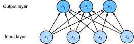

Hồi quy Softmax¶
Trong sec_linear_regression, ta đã giới thiệu hồi quy tuyến tính, thực hành qua các cài đặt từ đầu trong sec_linear_scratch và lại sử dụng API cấp cao của framework deep learning trong sec_linear_concise để làm công việc nặng nề.
Hồi quy là cái búa ta với đến khi muốn trả lời các câu hỏi bao nhiêu? hoặc bao nhiêu cái?. Nếu bạn muốn dự đoán số tiền (giá) mà một ngôi nhà sẽ được bán, hoặc số lần thắng một đội bóng chày có thể có, hoặc số ngày một bệnh nhân sẽ nằm viện trước khi xuất viện, thì bạn có thể đang tìm kiếm mô hình hồi quy. Tuy nhiên, ngay cả trong các mô hình hồi quy, có những sự phân biệt quan trọng. Chẳng hạn, giá một ngôi nhà sẽ không bao giờ âm và các thay đổi thường tương đối so với giá cơ bản. Do đó, hồi quy trên lôgarit của giá có thể hiệu quả hơn. Tương tự, số ngày bệnh nhân nằm viện là một biến ngẫu nhiên không âm rời rạc. Do đó, bình phương tối thiểu trung bình cũng có thể không phải là cách tiếp cận lý tưởng. Loại mô hình thời gian-sự kiện này đi kèm với nhiều phức tạp khác được xử lý trong một tiểu ngành chuyên biệt gọi là mô hình sống sót.
Vấn đề ở đây không phải là làm bạn choáng ngợp mà chỉ để cho bạn biết rằng có nhiều hơn để ước lượng hơn chỉ đơn giản là tối thiểu hóa sai số bình phương. Và rộng hơn, có nhiều hơn để học có giám sát hơn là hồi quy. Trong phần này, ta tập trung vào các bài toán phân loại nơi ta gác sang một bên các câu hỏi bao nhiêu? và thay vào đó tập trung vào các câu hỏi thuộc loại nào?.
- Email này có thuộc thư mục spam hay hộp thư đến?
- Khách hàng này có nhiều khả năng đăng ký hay không đăng ký dịch vụ đăng ký?
- Ảnh này mô tả một con lừa, một con chó, một con mèo, hay một con gà trống?
- Bộ phim nào Aston có nhiều khả năng xem tiếp theo?
- Bạn sẽ đọc phần nào của cuốn sách tiếp theo?
Thông thường, các chuyên gia machine learning dùng quá tải từ phân loại để mô tả hai bài toán tinh tế khác nhau: (i) những bài toán mà ta chỉ quan tâm đến việc gán cứng các mẫu vào các danh mục (lớp); và (ii) những bài toán mà ta muốn thực hiện gán mềm, tức là đánh giá xác suất áp dụng của mỗi danh mục. Sự phân biệt có xu hướng bị làm mờ, một phần, vì thường, ngay cả khi ta chỉ quan tâm đến các gán cứng, ta vẫn sử dụng các mô hình thực hiện gán mềm.
Thậm chí còn có các trường hợp mà nhiều hơn một nhãn có thể đúng. Chẳng hạn, một bài báo có thể đồng thời đề cập các chủ đề giải trí, kinh doanh và du hành vũ trụ, nhưng không phải các chủ đề y tế hay thể thao. Do đó, việc phân loại nó vào một trong các danh mục trên một mình sẽ không hữu ích lắm. Bài toán này thường được biết đến là phân loại nhiều nhãn. Xem Tsoumakas.Katakis.2007 để xem tổng quan và Huang.Xu.Yu.2015 để xem một thuật toán hiệu quả khi gắn thẻ ảnh.
Phân loại¶
Để khởi động, hãy bắt đầu với một bài toán phân loại ảnh đơn giản. Ở đây, mỗi đầu vào bao gồm một ảnh thang độ xám \(2\times2\). Ta có thể biểu diễn mỗi giá trị pixel bằng một vô hướng đơn, cho ta bốn đặc trưng \(x_1, x_2, x_3, x_4\). Hơn nữa, giả sử mỗi ảnh thuộc về một trong số các danh mục "mèo", "gà" và "chó".
Tiếp theo, ta phải chọn cách biểu diễn các nhãn. Ta có hai lựa chọn rõ ràng. Có lẽ xung động tự nhiên nhất sẽ là chọn \(y \in \{1, 2, 3\}\), trong đó các số nguyên đại diện cho \(\{\textrm{chó}, \textrm{mèo}, \textrm{gà}\}\) tương ứng. Đây là một cách tốt để lưu trữ thông tin như vậy trên máy tính. Nếu các danh mục có một thứ tự tự nhiên trong chúng, chẳng hạn nếu ta đang cố gắng dự đoán \(\{\textrm{trẻ sơ sinh}, \textrm{trẻ mới biết đi}, \textrm{thiếu niên}, \textrm{thanh niên}, \textrm{người lớn}, \textrm{người già}\}\), thì có thể có lý do để đặt vấn đề này như một bài toán hồi quy thứ tự và giữ các nhãn ở định dạng này. Xem Moon.Smola.Chang.ea.2010 để xem tổng quan về các loại hàm mất mát xếp hạng khác nhau và Beutel.Murray.Faloutsos.ea.2014 để xem phương pháp Bayesian xử lý các phản hồi với nhiều hơn một mode.
Nhìn chung, các bài toán phân loại không đi kèm với các thứ tự tự nhiên giữa các lớp. May mắn thay, các nhà thống kê từ lâu đã phát minh ra một cách đơn giản để biểu diễn dữ liệu phân loại: mã hóa one-hot. Mã hóa one-hot là một vector với nhiều thành phần như số lượng danh mục của ta. Thành phần tương ứng với danh mục của một thực thể cụ thể được đặt là 1 và tất cả các thành phần khác được đặt là 0. Trong trường hợp của ta, nhãn \(y\) sẽ là một vector ba chiều, với \((1, 0, 0)\) tương ứng với "mèo", \((0, 1, 0)\) với "gà", và \((0, 0, 1)\) với "chó":
Mô hình Tuyến tính¶
Để ước lượng các xác suất có điều kiện liên quan đến tất cả các lớp có thể, ta cần một mô hình với nhiều đầu ra, mỗi lớp một đầu ra. Để giải quyết phân loại với các mô hình tuyến tính, ta sẽ cần nhiều hàm affine như số lượng đầu ra của ta. Nói chính xác hơn, ta chỉ cần ít hơn một, vì danh mục cuối cùng phải là phần khác biệt giữa \(1\) và tổng các danh mục khác, nhưng vì lý do đối xứng ta sử dụng tham số hóa dư thừa một chút. Mỗi đầu ra tương ứng với hàm affine của riêng nó. Trong trường hợp của ta, vì ta có 4 đặc trưng và 3 danh mục đầu ra có thể có, ta cần 12 vô hướng để biểu diễn trọng số (\(w\) với chỉ số), và 3 vô hướng để biểu diễn hệ số chặn (\(b\) với chỉ số). Điều này cho:
Sơ đồ mạng nơ-ron tương ứng được hiển thị trong fig_softmaxreg. Giống như trong hồi quy tuyến tính, ta sử dụng mạng nơ-ron một lớp. Và vì việc tính mỗi đầu ra, \(o_1, o_2\) và \(o_3\), phụ thuộc vào mọi đầu vào, \(x_1\), \(x_2\), \(x_3\) và \(x_4\), lớp đầu ra cũng có thể được mô tả là lớp kết nối đầy đủ.

Để ký hiệu gọn hơn, ta sử dụng vector và ma trận: \(\mathbf{o} = \mathbf{W} \mathbf{x} + \mathbf{b}\) là phù hợp hơn nhiều cho toán học và code. Lưu ý rằng ta đã thu tất cả trọng số vào một ma trận \(3 \times 4\) và tất cả hệ số chặn \(\mathbf{b} \in \mathbb{R}^3\) trong một vector.
Hàm Softmax¶
Giả sử một hàm mất mát phù hợp, ta có thể thử, trực tiếp, tối thiểu hóa sự khác biệt giữa \(\mathbf{o}\) và nhãn \(\mathbf{y}\). Trong khi hóa ra việc coi phân loại như một bài toán hồi quy có giá trị vector hoạt động tốt đến ngạc nhiên, tuy nhiên nó không thỏa mãn theo những cách sau:
- Không có gì đảm bảo rằng các đầu ra \(o_i\) cộng lại bằng \(1\) theo cách ta mong đợi xác suất hoạt động.
- Không có gì đảm bảo rằng các đầu ra \(o_i\) thậm chí không âm, ngay cả khi tổng của chúng bằng \(1\), hay chúng không vượt quá \(1\).
Cả hai khía cạnh này làm cho bài toán ước lượng khó giải và nghiệm rất giòn với các điểm ngoại lệ. Chẳng hạn, nếu ta giả định rằng có sự phụ thuộc tuyến tính dương giữa số phòng ngủ và khả năng ai đó sẽ mua nhà, xác suất có thể vượt quá \(1\) khi mua biệt thự! Do đó, ta cần một cơ chế để "ép" các đầu ra.
Có nhiều cách ta có thể đạt được mục tiêu này. Chẳng hạn, ta có thể giả định rằng các đầu ra \(\mathbf{o}\) là các phiên bản bị nhiễu của \(\mathbf{y}\), trong đó sự nhiễu xảy ra bằng cách thêm nhiễu \(\boldsymbol{\epsilon}\) được rút từ phân phối chuẩn. Nói cách khác, \(\mathbf{y} = \mathbf{o} + \boldsymbol{\epsilon}\), trong đó \(\epsilon_i \sim \mathcal{N}(0, \sigma^2)\). Đây là cái gọi là mô hình probit, lần đầu được giới thiệu bởi Fechner.1860. Mặc dù hấp dẫn, nhưng nó không hoạt động tốt bằng cũng không dẫn đến một bài toán tối ưu hóa đặc biệt đẹp, khi so sánh với hàm softmax.
Một cách khác để đạt mục tiêu này (và đảm bảo tính không âm) là sử dụng hàm mũ \(P(y = i) \propto \exp o_i\). Điều này thực sự thỏa mãn yêu cầu rằng xác suất lớp có điều kiện tăng khi \(o_i\) tăng, nó đơn điệu, và tất cả các xác suất đều không âm. Sau đó ta có thể biến đổi các giá trị này để chúng cộng lại bằng \(1\) bằng cách chia mỗi giá trị cho tổng của chúng. Quá trình này được gọi là chuẩn hóa. Kết hợp hai phần này lại với nhau cho ta hàm softmax:
Lưu ý rằng tọa độ lớn nhất của \(\mathbf{o}\) tương ứng với lớp có khả năng nhất theo \(\hat{\mathbf{y}}\). Hơn nữa, vì phép toán softmax bảo toàn thứ tự giữa các đối số của nó, ta không cần tính softmax để xác định lớp nào được gán xác suất cao nhất. Do đó,
Ý tưởng về softmax có từ Gibbs.1902, người đã điều chỉnh các ý tưởng từ vật lý. Ngược lại xa hơn, Boltzmann, cha đẻ của vật lý thống kê hiện đại, đã dùng thủ thuật này để mô hình hóa một phân phối qua các trạng thái năng lượng trong các phân tử khí. Cụ thể, ông đã phát hiện ra rằng sự phổ biến của một trạng thái năng lượng trong một tập hợp nhiệt động lực học, chẳng hạn như các phân tử trong một khí, tỉ lệ với \(\exp(-E/kT)\). Ở đây, \(E\) là năng lượng của trạng thái, \(T\) là nhiệt độ, và \(k\) là hằng số Boltzmann. Khi các nhà thống kê nói về tăng hoặc giảm "nhiệt độ" của một hệ thống thống kê, họ đề cập đến việc thay đổi \(T\) để ưu tiên các trạng thái năng lượng thấp hơn hoặc cao hơn. Theo ý tưởng của Gibbs, năng lượng tương đương với sai số. Các mô hình dựa trên năng lượng [Ranzato.Boureau.Chopra.ea.2007] sử dụng quan điểm này khi mô tả các bài toán trong deep learning.
Vector hóa¶
Để cải thiện hiệu quả tính toán, ta vector hóa các phép tính trong các minibatch dữ liệu. Giả sử ta được cho một minibatch \(\mathbf{X} \in \mathbb{R}^{n \times d}\) gồm \(n\) mẫu với chiều số (số lượng đầu vào) \(d\). Hơn nữa, giả sử ta có \(q\) danh mục ở đầu ra. Thì trọng số thỏa mãn \(\mathbf{W} \in \mathbb{R}^{d \times q}\) và hệ số chặn thỏa mãn \(\mathbf{b} \in \mathbb{R}^{1\times q}\).
Điều này tăng tốc phép toán chủ đạo thành tích ma trận--ma trận \(\mathbf{X} \mathbf{W}\). Hơn nữa, vì mỗi hàng trong \(\mathbf{X}\) đại diện cho một mẫu dữ liệu, phép toán softmax tự nó có thể được tính theo hàng: với mỗi hàng của \(\mathbf{O}\), lấy mũ tất cả các phần tử và sau đó chuẩn hóa chúng bằng tổng. Lưu ý, tuy nhiên, phải cẩn thận để tránh lũy thừa và lấy lôgarit của các số lớn, vì điều này có thể gây ra tràn số hoặc thiếu số. Các framework deep learning tự động xử lý điều này.
Hàm Mất mát¶
Bây giờ ta có ánh xạ từ đặc trưng \(\mathbf{x}\) đến xác suất \(\mathbf{\hat{y}}\), ta cần một cách để tối ưu hóa độ chính xác của ánh xạ này. Ta sẽ dựa vào ước lượng hợp lý cực đại, chính là phương pháp ta đã gặp khi cung cấp lý do xác suất cho hàm mất mát sai số bình phương trung bình trong subsec_normal_distribution_and_squared_loss.
Log-Hợp lý¶
Hàm softmax cho ta vector \(\hat{\mathbf{y}}\), mà ta có thể diễn giải là các xác suất có điều kiện (ước lượng) của mỗi lớp, cho bất kỳ đầu vào \(\mathbf{x}\) nào, chẳng hạn \(\hat{y}_1\) = \(P(y=\textrm{mèo} \mid \mathbf{x})\). Trong phần sau ta giả định rằng với tập dữ liệu với đặc trưng \(\mathbf{X}\), các nhãn \(\mathbf{Y}\) được biểu diễn bằng vector nhãn mã hóa one-hot. Ta có thể so sánh các ước lượng với thực tế bằng cách kiểm tra xác suất của các lớp thực tế như thế nào theo mô hình của ta, cho trước các đặc trưng:
Ta được phép dùng phân tích thừa số vì ta giả định rằng mỗi nhãn được rút độc lập từ phân phối tương ứng của nó \(P(\mathbf{y}\mid\mathbf{x}^{(i)})\). Vì tối đa hóa tích của các số hạng khó xử, ta lấy logarit âm để thu được bài toán tương đương của tối thiểu hóa log-hợp lý âm:
trong đó với bất kỳ cặp nhãn \(\mathbf{y}\) và dự đoán mô hình \(\hat{\mathbf{y}}\) trên \(q\) lớp, hàm mất mát \(l\) là
Vì những lý do giải thích sau,
hàm mất mát trong :eqref:eq_l_cross_entropy
thường được gọi là mất mát entropy chéo.
Vì \(\mathbf{y}\) là vector one-hot có độ dài \(q\),
tổng trên tất cả tọa độ \(j\) biến mất ngoại trừ một số hạng.
Lưu ý rằng mất mát \(l(\mathbf{y}, \hat{\mathbf{y}})\)
bị giới hạn từ dưới bởi \(0\)
bất cứ khi nào \(\hat{\mathbf{y}}\) là vector xác suất:
không có phần tử nào lớn hơn \(1\),
do đó logarit âm của chúng không thể thấp hơn \(0\);
\(l(\mathbf{y}, \hat{\mathbf{y}}) = 0\) chỉ khi ta dự đoán
nhãn thực tế với sự chắc chắn.
Điều này không bao giờ xảy ra với bất kỳ cài đặt hữu hạn nào của trọng số
vì đưa đầu ra softmax về \(1\)
đòi hỏi đầu vào tương ứng \(o_i\) tiến đến vô cực
(hoặc tất cả các đầu ra khác \(o_j\) với \(j \neq i\) tiến đến vô cực âm).
Ngay cả khi mô hình của ta có thể gán xác suất đầu ra bằng \(0\),
bất kỳ sai số nào khi gán độ tin cậy cao như vậy
sẽ phải chịu mất mát vô hạn (\(-\log 0 = \infty\)).
Softmax và Mất mát Entropy Chéo¶
Vì hàm softmax
và mất mát entropy chéo tương ứng rất phổ biến,
đáng để hiểu rõ hơn một chút cách chúng được tính.
Thay :eqref:eq_softmax_y_and_o vào định nghĩa mất mát
trong :eqref:eq_l_cross_entropy
và sử dụng định nghĩa softmax ta được
Để hiểu rõ hơn những gì đang xảy ra, hãy xem xét đạo hàm theo bất kỳ logit \(o_j\) nào. Ta được
Nói cách khác, đạo hàm là sự khác biệt giữa xác suất được gán bởi mô hình của ta, được biểu diễn bởi phép toán softmax, và những gì thực sự xảy ra, được biểu diễn bởi các phần tử trong vector nhãn one-hot. Theo nghĩa này, nó rất giống với những gì ta đã thấy trong hồi quy, trong đó gradient là sự khác biệt giữa quan sát \(y\) và ước lượng \(\hat{y}\). Đây không phải là sự trùng hợp ngẫu nhiên. Trong bất kỳ mô hình họ mũ nào, các gradient của log-hợp lý được cho bởi chính xác số hạng này. Thực tế này làm cho việc tính gradient trở nên dễ dàng trong thực tế.
Bây giờ hãy xem xét trường hợp ta quan sát không chỉ một kết quả duy nhất
mà là toàn bộ phân phối trên các kết quả.
Ta có thể dùng cùng biểu diễn như trước cho nhãn \(\mathbf{y}\).
Sự khác biệt duy nhất là thay vì
một vector chỉ chứa các phần tử nhị phân,
chẳng hạn \((0, 0, 1)\), bây giờ ta có vector xác suất tổng quát,
chẳng hạn \((0.1, 0.2, 0.7)\).
Toán học ta đã dùng trước đó để định nghĩa mất mát \(l\)
trong :eqref:eq_l_cross_entropy
vẫn hoạt động tốt,
chỉ là việc diễn giải có phần tổng quát hơn.
Đó là giá trị kỳ vọng của mất mát với phân phối trên các nhãn.
Mất mát này được gọi là mất mát entropy chéo và nó là
một trong những mất mát phổ biến nhất cho các bài toán phân loại.
Ta có thể giải bí ẩn cái tên bằng cách giới thiệu chỉ những điều cơ bản của lý thuyết thông tin.
Tóm lại, nó đo số bit cần thiết để mã hóa những gì ta thấy, \(\mathbf{y}\),
so với những gì ta dự đoán sẽ xảy ra, \(\hat{\mathbf{y}}\).
Ta cung cấp một giải thích rất cơ bản sau. Để biết thêm
chi tiết về lý thuyết thông tin, xem
Cover.Thomas.1999 hoặc mackay2003information.
Kiến thức Cơ bản về Lý thuyết Thông tin¶
Nhiều bài báo deep learning sử dụng trực giác và thuật ngữ từ lý thuyết thông tin. Để hiểu được chúng, ta cần một ngôn ngữ chung. Đây là một hướng dẫn sống còn. Lý thuyết thông tin đề cập đến bài toán mã hóa, giải mã, truyền, và thao túng thông tin (còn được gọi là dữ liệu).
Entropy¶
Ý tưởng trung tâm trong lý thuyết thông tin là định lượng lượng thông tin chứa trong dữ liệu. Điều này đặt ra giới hạn cho khả năng nén dữ liệu của ta. Với phân phối \(P\), entropy của nó, \(H[P]\), được định nghĩa như sau:
Một trong những định lý cơ bản của lý thuyết thông tin nêu rằng để mã hóa dữ liệu được rút ngẫu nhiên từ phân phối \(P\), ta cần ít nhất \(H[P]\) "nat" để mã hóa nó [Shannon.1948]. Nếu bạn tự hỏi "nat" là gì, nó tương đương với bit nhưng khi sử dụng mã với cơ số \(e\) thay vì cơ số 2. Do đó, một nat là \(\frac{1}{\log(2)} \approx 1.44\) bit.
Sự Ngạc nhiên¶
Bạn có thể tự hỏi việc nén có liên quan gì đến dự đoán. Hãy tưởng tượng ta có một luồng dữ liệu mà ta muốn nén. Nếu luôn dễ dàng cho ta dự đoán token tiếp theo, thì dữ liệu này dễ nén. Lấy ví dụ cực đoan nơi mỗi token trong luồng luôn nhận cùng một giá trị. Đó là một luồng dữ liệu rất nhàm chán! Và không chỉ nhàm chán, nó còn dễ dự đoán. Vì các token luôn giống nhau, ta không cần truyền bất kỳ thông tin nào để truyền thông nội dung của luồng. Dễ dự đoán, dễ nén.
Tuy nhiên nếu ta không thể dự đoán hoàn hảo mọi sự kiện,
thì đôi khi ta có thể bất ngờ.
Sự ngạc nhiên của ta lớn hơn khi một sự kiện được gán xác suất thấp hơn.
Claude Shannon đã chọn \(\log \frac{1}{P(j)} = -\log P(j)\)
để định lượng sự ngạc nhiên của một người khi quan sát sự kiện \(j\)
sau khi gán cho nó xác suất (chủ quan) \(P(j)\).
Entropy được định nghĩa trong :eqref:eq_softmax_reg_entropy
khi đó là sự ngạc nhiên kỳ vọng
khi một người gán các xác suất đúng
thực sự khớp với quá trình sinh dữ liệu.
Xem lại Entropy Chéo¶
Vì vậy nếu entropy là mức độ ngạc nhiên mà một người biết xác suất thực sự trải nghiệm, thì bạn có thể tự hỏi, entropy chéo là gì? Entropy chéo từ \(P\) đến \(Q\), ký hiệu \(H(P, Q)\), là sự ngạc nhiên kỳ vọng của một quan sát viên với xác suất chủ quan \(Q\) khi nhìn thấy dữ liệu thực sự được tạo ra theo xác suất \(P\). Điều này được cho bởi \(H(P, Q) \stackrel{\textrm{def}}{=} \sum_j - P(j) \log Q(j)\). Entropy chéo thấp nhất có thể đạt được khi \(P=Q\). Trong trường hợp này, entropy chéo từ \(P\) đến \(Q\) là \(H(P, P)= H(P)\).
Tóm lại, ta có thể nghĩ về mục tiêu phân loại entropy chéo theo hai cách: (i) là tối đa hóa hợp lý của dữ liệu quan sát được; và (ii) là tối thiểu hóa sự ngạc nhiên của ta (và do đó số bit) cần thiết để truyền thông các nhãn.
Tóm tắt và Thảo luận¶
Trong phần này, ta đã gặp hàm mất mát không tầm thường đầu tiên, cho phép ta tối ưu hóa trên các không gian đầu ra rời rạc. Chìa khóa trong thiết kế của nó là ta đã tiếp cận theo xác suất, coi các danh mục rời rạc là các thực thể được rút từ phân phối xác suất. Như một tác dụng phụ, ta đã gặp hàm softmax, một hàm kích hoạt tiện lợi biến đổi đầu ra của lớp mạng nơ-ron thông thường thành các phân phối xác suất rời rạc hợp lệ. Ta đã thấy rằng đạo hàm của mất mát entropy chéo khi kết hợp với softmax hoạt động rất giống với đạo hàm của sai số bình phương; tức là bằng cách lấy sự khác biệt giữa hành vi kỳ vọng và dự đoán của nó. Và trong khi ta chỉ có thể chạm đến bề mặt của nó, ta đã gặp những kết nối thú vị với vật lý thống kê và lý thuyết thông tin.
Mặc dù đây là đủ để cho bạn tiếp tục, và hy vọng đủ để kích thích sự tò mò, ta hầu như không đi sâu ở đây. Trong số những thứ khác, ta đã bỏ qua các cân nhắc tính toán. Cụ thể, với bất kỳ lớp kết nối đầy đủ nào có \(d\) đầu vào và \(q\) đầu ra, chi phí tham số hóa và tính toán là \(\mathcal{O}(dq)\), có thể cực kỳ cao trong thực tế. May mắn thay, chi phí chuyển đổi \(d\) đầu vào thành \(q\) đầu ra này có thể được giảm thông qua xấp xỉ và nén. Chẳng hạn Deep Fried Convnets [Yang.Moczulski.Denil.ea.2015] sử dụng kết hợp các phép hoán vị, biến đổi Fourier và co giãn để giảm chi phí từ bậc hai xuống log-tuyến tính. Các kỹ thuật tương tự hoạt động cho các xấp xỉ ma trận cấu trúc nâng cao hơn [sindhwani2015structured]. Cuối cùng, ta có thể sử dụng các phân rã giống quaternion để giảm chi phí xuống \(\mathcal{O}(\frac{dq}{n})\), nếu ta sẵn sàng đánh đổi một lượng nhỏ độ chính xác cho chi phí tính toán và lưu trữ [Zhang.Tay.Zhang.ea.2021] dựa trên hệ số nén \(n\). Đây là một lĩnh vực nghiên cứu đang hoạt động. Điều làm cho nó khó khăn là ta không nhất thiết cố gắng cho biểu diễn gọn nhất hay số lượng phép toán dấu phẩy động nhỏ nhất mà là nghiệm có thể được thực thi hiệu quả nhất trên GPU hiện đại.
Bài tập¶
- Ta có thể khám phá mối liên hệ giữa các họ mũ và softmax một cách sâu sắc hơn.
- Tính đạo hàm bậc hai của mất mát entropy chéo \(l(\mathbf{y},\hat{\mathbf{y}})\) cho softmax.
- Tính phương sai của phân phối được cho bởi \(\mathrm{softmax}(\mathbf{o})\) và chứng minh nó khớp với đạo hàm bậc hai được tính ở trên.
- Giả sử ta có ba lớp xảy ra với xác suất bằng nhau, tức là vector xác suất là \((\frac{1}{3}, \frac{1}{3}, \frac{1}{3})\).
- Vấn đề là gì nếu ta cố thiết kế mã nhị phân cho nó?
- Bạn có thể thiết kế mã tốt hơn không? Gợi ý: điều gì xảy ra nếu ta cố mã hóa hai quan sát độc lập? Điều gì nếu ta mã hóa \(n\) quan sát chung?
- Khi mã hóa các tín hiệu được truyền qua dây vật lý, các kỹ sư không phải lúc nào cũng dùng mã nhị phân. Chẳng hạn, PAM-3 sử dụng ba mức tín hiệu \(\{-1, 0, 1\}\) thay vì hai mức \(\{0, 1\}\). Bạn cần bao nhiêu đơn vị ternary để truyền một số nguyên trong phạm vi \(\{0, \ldots, 7\}\)? Tại sao đây có thể là ý tưởng tốt hơn về mặt điện tử?
- Mô hình Bradley--Terry sử dụng
một mô hình logistic để nắm bắt sở thích. Để người dùng chọn giữa táo và cam, ta
giả định điểm số \(o_{\textrm{táo}}\) và \(o_{\textrm{cam}}\). Yêu cầu của ta là điểm số cao hơn phải dẫn đến khả năng cao hơn khi chọn mặt hàng liên quan và
mặt hàng có điểm số cao nhất là cái có nhiều khả năng được chọn nhất [Bradley.Terry.1952].
- Chứng minh rằng softmax thỏa mãn yêu cầu này.
- Điều gì xảy ra nếu bạn muốn cho phép tùy chọn mặc định không chọn táo cũng không chọn cam? Gợi ý: bây giờ người dùng có ba lựa chọn.
- Softmax có tên từ ánh xạ sau: \(\textrm{RealSoftMax}(a, b) = \log (\exp(a) + \exp(b))\).
- Chứng minh rằng \(\textrm{RealSoftMax}(a, b) > \mathrm{max}(a, b)\).
- Bạn có thể làm cho sự khác biệt giữa cả hai hàm nhỏ bao nhiêu? Gợi ý: không mất tổng quát bạn có thể đặt \(b = 0\) và \(a \geq b\).
- Chứng minh rằng điều này đúng cho \(\lambda^{-1} \textrm{RealSoftMax}(\lambda a, \lambda b)\), miễn là \(\lambda > 0\).
- Chứng minh rằng với \(\lambda \to \infty\) ta có \(\lambda^{-1} \textrm{RealSoftMax}(\lambda a, \lambda b) \to \mathrm{max}(a, b)\).
- Xây dựng hàm softmin tương tự.
- Mở rộng điều này cho nhiều hơn hai số.
- Hàm \(g(\mathbf{x}) \stackrel{\textrm{def}}{=} \log \sum_i \exp x_i\) đôi khi cũng được gọi là hàm phân hoạch lôgarit.
- Chứng minh rằng hàm là lồi. Gợi ý: để làm như vậy, sử dụng thực tế là đạo hàm bậc nhất tương đương với xác suất từ hàm softmax và chứng minh rằng đạo hàm bậc hai là phương sai.
- Chứng minh rằng \(g\) bất biến theo tịnh tiến, tức là \(g(\mathbf{x} + b) = g(\mathbf{x})\).
- Điều gì xảy ra nếu một số tọa độ \(x_i\) rất lớn? Điều gì xảy ra nếu tất cả chúng rất nhỏ?
- Chứng minh rằng nếu ta chọn \(b = \mathrm{max}_i x_i\) ta kết thúc với một cài đặt ổn định về số học.
- Giả sử ta có phân phối xác suất \(P\) nào đó. Giả sử ta chọn phân phối khác \(Q\) với \(Q(i) \propto P(i)^\alpha\) với \(\alpha > 0\).
- Lựa chọn \(\alpha\) nào tương ứng với việc tăng gấp đôi nhiệt độ? Lựa chọn nào tương ứng với giảm một nửa?
- Điều gì xảy ra nếu ta để nhiệt độ tiến đến \(0\)?
- Điều gì xảy ra nếu ta để nhiệt độ tiến đến \(\infty\)?